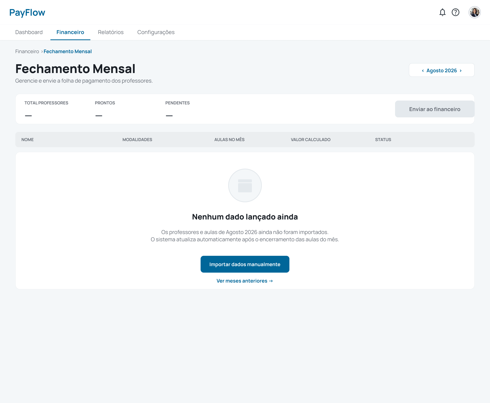
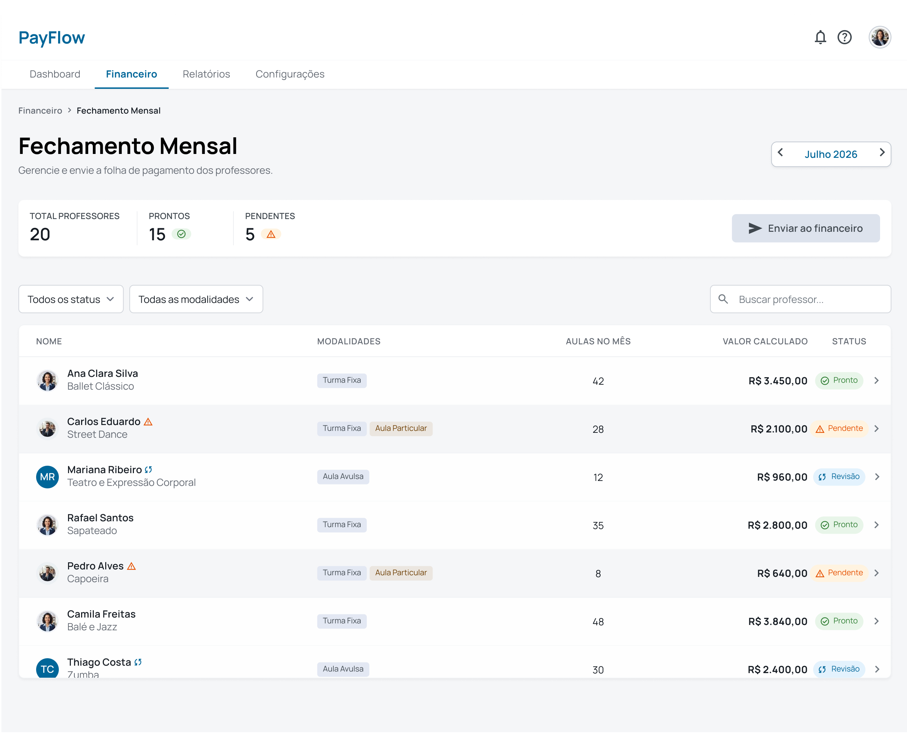
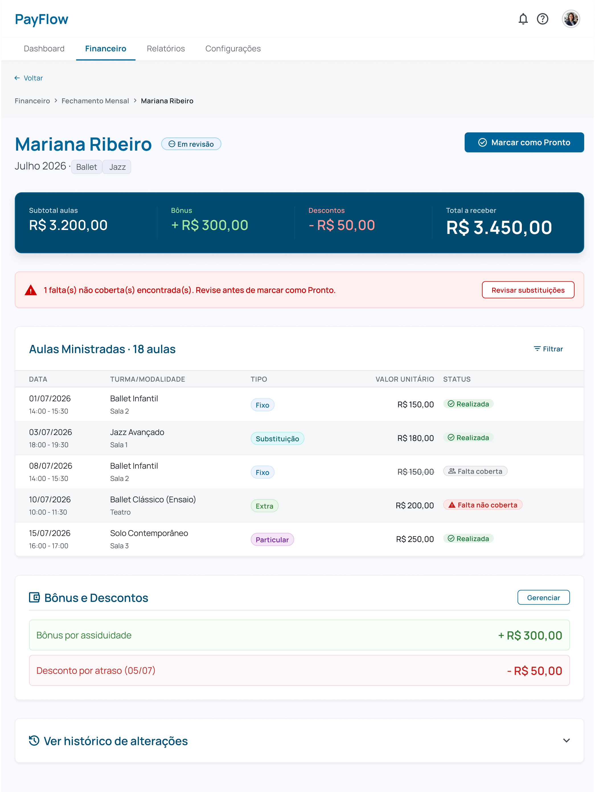
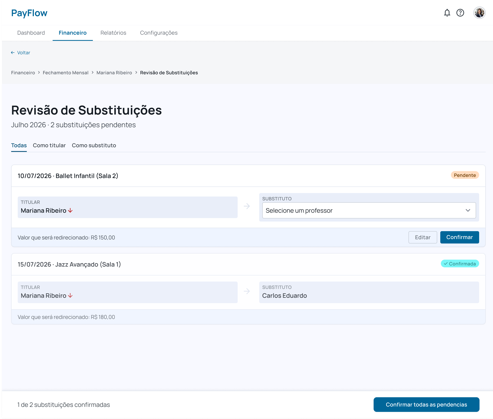
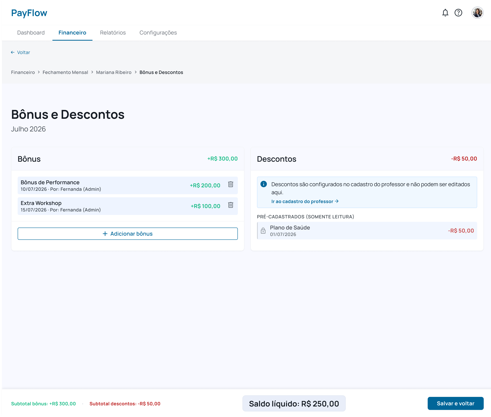
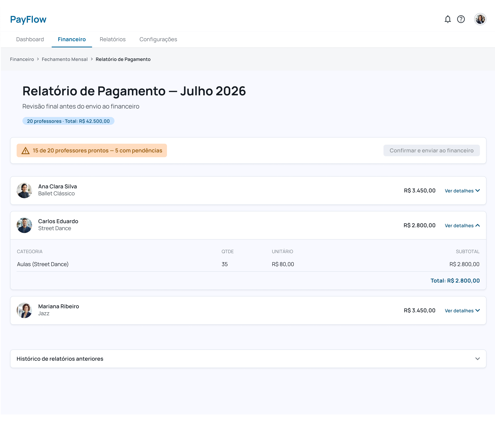
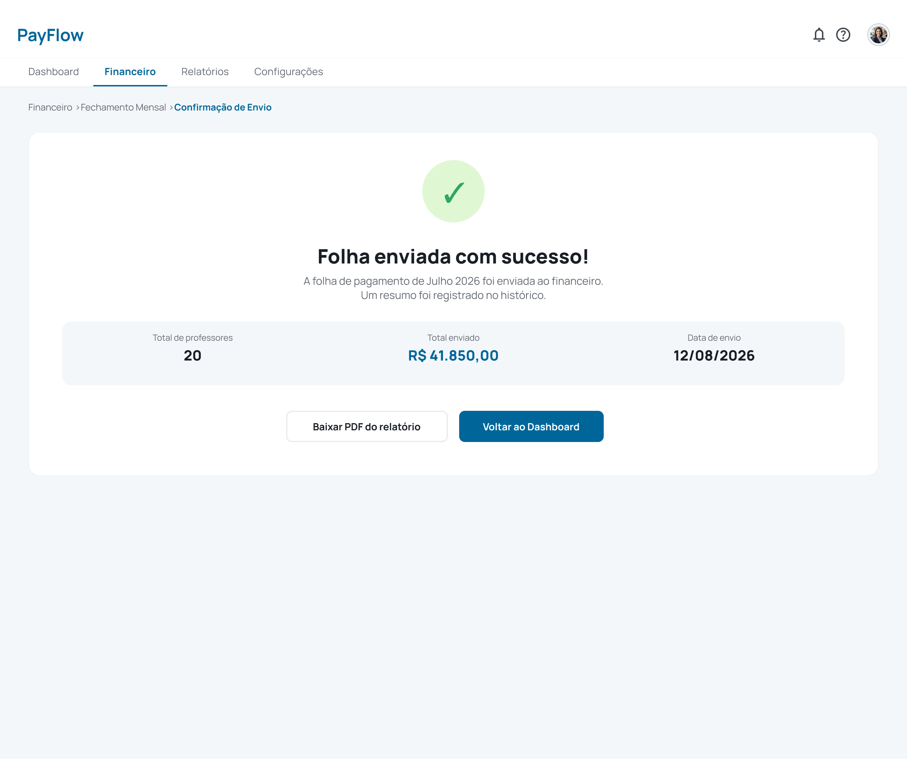

Projeto fictício desenvolvido como desafio técnico de processo seletivo. Nomes de empresa e personas foram alterados para publicação.
PayFlow é um sistema fictício de gestão para escolas de dança e centros culturais. O desafio foi projetar do zero um módulo crítico: o fechamento mensal da folha de pagamento de professores. Uma rotina sensível, repetida todo mês, em que qualquer erro chega ao financeiro sem rastreamento.
O projeto começou com anotações brutas de entrevistas, exatamente como surgem em campo, e precisava chegar a uma interface de alta fidelidade navegável. Sem requisitos prontos. Sem fluxo pré-definido. A estrutura tinha que vir do material bruto.
Fernanda, Analista Administrativa, é responsável pelo pagamento mensal de cerca de 20 professores. Ela realiza todo o processo em uma planilha com várias abas, copiando dados do sistema de agenda. O problema não é o volume: é que qualquer erro passa despercebido e chega ao financeiro sem explicação.
"Se a Paula cobriu a aula da Marina, o valor tem que ir pra Paula. Isso eu vejo na mão e às vezes escapa."
O ponto de partida era material de pesquisa bruto: falas diretas de Fernanda e do time financeiro, sem requisitos prontos. A estrutura do produto nasceu da interpretação dessas dores.
Quatro decisões foram centrais, cada uma com um raciocínio claro:
Do estado vazio do primeiro mês à confirmação de envio ao financeiro, o fluxo cobre todos os estados da rotina de Fernanda.







A identidade do PayFlow usa Manrope em ExtraBold para hierarquia forte e azul #006699 como cor primária. O ciano #00CCCC é reservado para tags de status e elementos de destaque, separando o que é navegação do que é informação de estado.
A decisão mais importante foi criar o estado "Pronto" por professor antes de liberar o envio geral. Isso força a revisão de cada caso, mas torna o fluxo mais longo quando há muitas pendências. Para compensar, trabalhei com ações em lote e alertas que levam direto ao problema.
Também optei por deixar os descontos em modo leitura, separados dos bônus. Eles já vêm pré-cadastrados e editar ali seria um erro fácil de cometer no momento errado.
Se tivesse mais tempo, conversaria com a Fernanda sobre dois pontos: com que frequência aparecem faltas sem substituto registrado, porque isso muda a prioridade do alerta. E se ela prefere revisar professor por professor ou numa visão consolidada, o que faria mais sentido nos dias com muitas pendências.